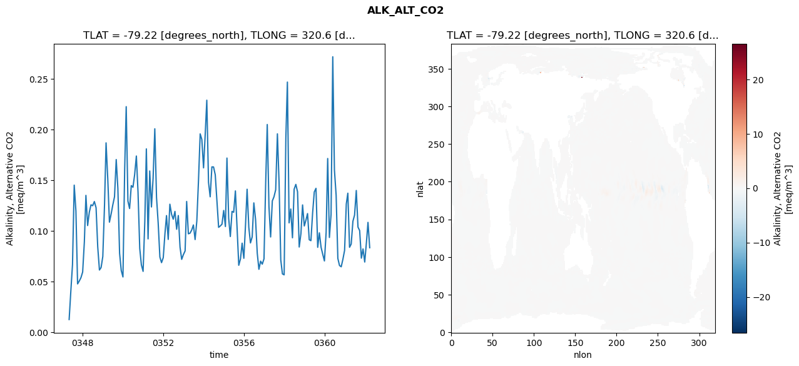
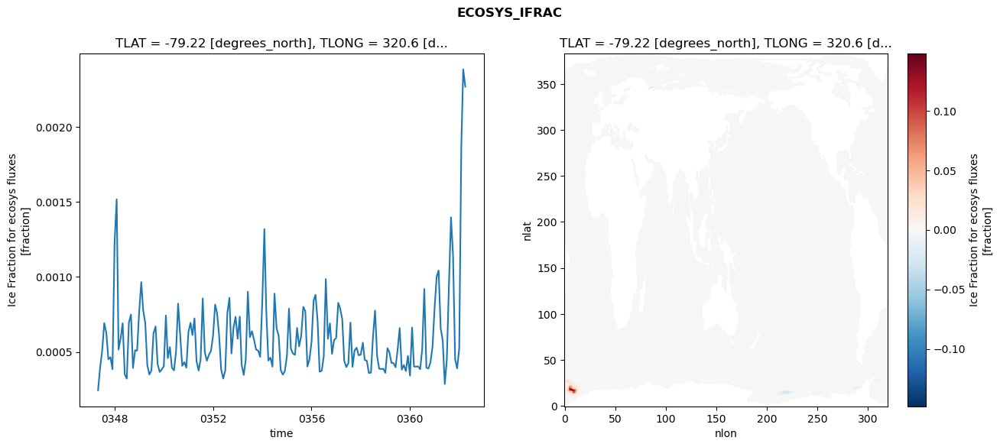
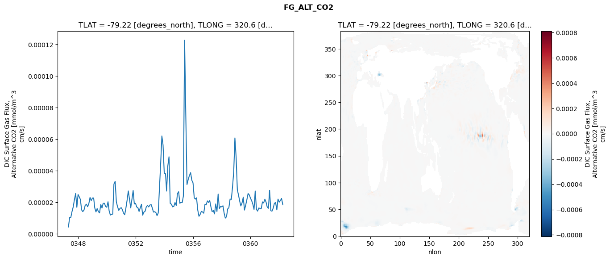
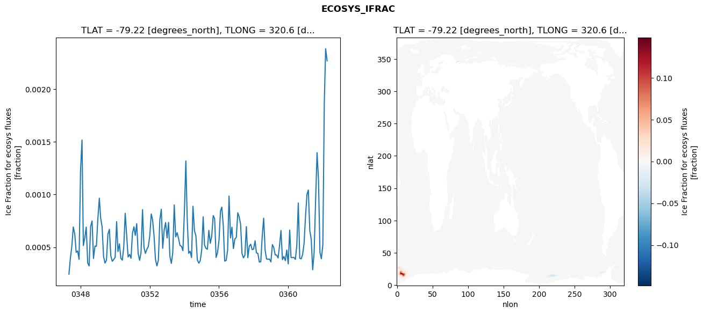
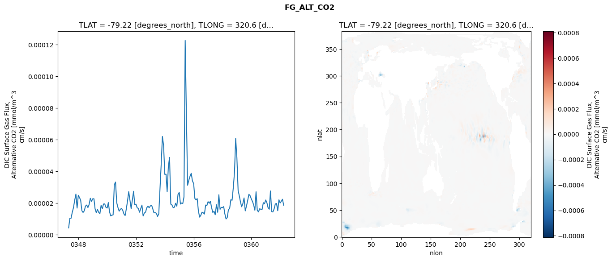
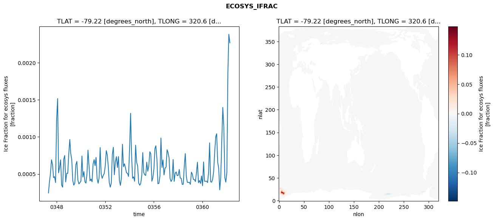
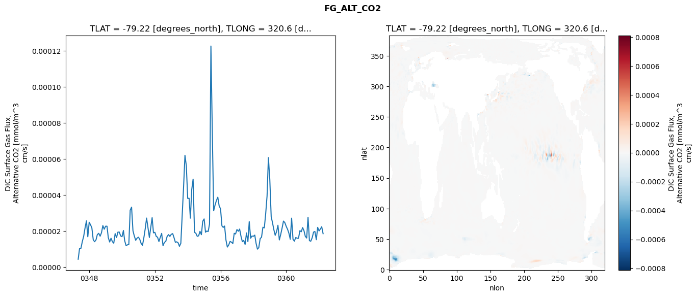

glb-dor_North_Atlantic_basin_001_1999-04-01_00005#
Simulation details#
Case: smyle.cdr-atlas-v0.glb-dor_North_Atlantic_basin_001_1999-04-01_00005.001
Basin: North_Atlantic_basin
Polygon: 1.0
Start date: 1999-04
Show code cell source Hide code cell source
import xarray as xr
import matplotlib.pyplot as plt
Show code cell source Hide code cell source
zarr_store = "/path/to/zarr/store"
# Parameters
zarr_store = "/global/cfs/projectdirs/m4746/Projects/Ocean-CDR-Atlas-v0/data/validation/smyle.cdr-atlas-v0.glb-dor_North_Atlantic_basin_001_1999-04-01_00005.001.validation.zarr"
Show code cell source Hide code cell source
%%time
ds_o = xr.open_zarr(zarr_store).compute()
ds_o
CPU times: user 712 ms, sys: 416 ms, total: 1.13 s
Wall time: 1.42 s
<xarray.Dataset> Size: 2MB
Dimensions: (nlat: 384, nlon: 320, time: 180)
Coordinates:
TLAT float64 8B -79.22
TLONG float64 8B 320.6
ULAT float64 8B -78.95
ULONG float64 8B 321.1
* time (time) object 1kB 0347-05-01 00:00:00 ... 0362-04-01 0...
z_t float32 4B 500.0
Dimensions without coordinates: nlat, nlon
Data variables:
ALK_ALT_CO2_diff (nlat, nlon) float32 492kB nan nan nan ... nan nan nan
ALK_ALT_CO2_rmse (time) float64 1kB 0.01267 0.04091 ... 0.1085 0.08348
DIC_ALT_CO2_diff (nlat, nlon) float32 492kB nan nan nan ... nan nan nan
DIC_ALT_CO2_rmse (time) float64 1kB 0.01721 0.05335 ... 0.1559 0.1339
ECOSYS_IFRAC_diff (nlat, nlon) float32 492kB nan nan nan ... nan nan nan
ECOSYS_IFRAC_rmse (time) float64 1kB 0.0002447 0.0003969 ... 0.002269
FG_ALT_CO2_diff (nlat, nlon) float32 492kB nan nan nan ... nan nan nan
FG_ALT_CO2_rmse (time) float64 1kB 4.432e-06 1.048e-05 ... 1.863e-05xarray.Dataset
- nlat: 384
- nlon: 320
- time: 180
- TLAT()float64-79.22
- long_name :
- array of t-grid latitudes
- units :
- degrees_north
array(-79.22052261)
- TLONG()float64320.6
- long_name :
- array of t-grid longitudes
- units :
- degrees_east
array(320.56250892)
- ULAT()float64-78.95
- long_name :
- array of u-grid latitudes
- units :
- degrees_north
array(-78.95289509)
- ULONG()float64321.1
- long_name :
- array of u-grid longitudes
- units :
- degrees_east
array(321.12500894)
- time(time)object0347-05-01 00:00:00 ... 0362-04-...
- bounds :
- time_bound
- long_name :
- time
array([cftime.DatetimeNoLeap(347, 5, 1, 0, 0, 0, 0, has_year_zero=True), cftime.DatetimeNoLeap(347, 6, 1, 0, 0, 0, 0, has_year_zero=True), cftime.DatetimeNoLeap(347, 7, 1, 0, 0, 0, 0, has_year_zero=True), cftime.DatetimeNoLeap(347, 8, 1, 0, 0, 0, 0, has_year_zero=True), cftime.DatetimeNoLeap(347, 9, 1, 0, 0, 0, 0, has_year_zero=True), cftime.DatetimeNoLeap(347, 10, 1, 0, 0, 0, 0, has_year_zero=True), cftime.DatetimeNoLeap(347, 11, 1, 0, 0, 0, 0, has_year_zero=True), cftime.DatetimeNoLeap(347, 12, 1, 0, 0, 0, 0, has_year_zero=True), cftime.DatetimeNoLeap(348, 1, 1, 0, 0, 0, 0, has_year_zero=True), cftime.DatetimeNoLeap(348, 2, 1, 0, 0, 0, 0, has_year_zero=True), cftime.DatetimeNoLeap(348, 3, 1, 0, 0, 0, 0, has_year_zero=True), cftime.DatetimeNoLeap(348, 4, 1, 0, 0, 0, 0, has_year_zero=True), cftime.DatetimeNoLeap(348, 5, 1, 0, 0, 0, 0, has_year_zero=True), cftime.DatetimeNoLeap(348, 6, 1, 0, 0, 0, 0, has_year_zero=True), cftime.DatetimeNoLeap(348, 7, 1, 0, 0, 0, 0, has_year_zero=True), cftime.DatetimeNoLeap(348, 8, 1, 0, 0, 0, 0, has_year_zero=True), cftime.DatetimeNoLeap(348, 9, 1, 0, 0, 0, 0, has_year_zero=True), cftime.DatetimeNoLeap(348, 10, 1, 0, 0, 0, 0, has_year_zero=True), cftime.DatetimeNoLeap(348, 11, 1, 0, 0, 0, 0, has_year_zero=True), cftime.DatetimeNoLeap(348, 12, 1, 0, 0, 0, 0, has_year_zero=True), cftime.DatetimeNoLeap(349, 1, 1, 0, 0, 0, 0, has_year_zero=True), cftime.DatetimeNoLeap(349, 2, 1, 0, 0, 0, 0, has_year_zero=True), cftime.DatetimeNoLeap(349, 3, 1, 0, 0, 0, 0, has_year_zero=True), cftime.DatetimeNoLeap(349, 4, 1, 0, 0, 0, 0, has_year_zero=True), cftime.DatetimeNoLeap(349, 5, 1, 0, 0, 0, 0, has_year_zero=True), cftime.DatetimeNoLeap(349, 6, 1, 0, 0, 0, 0, has_year_zero=True), cftime.DatetimeNoLeap(349, 7, 1, 0, 0, 0, 0, has_year_zero=True), cftime.DatetimeNoLeap(349, 8, 1, 0, 0, 0, 0, has_year_zero=True), cftime.DatetimeNoLeap(349, 9, 1, 0, 0, 0, 0, has_year_zero=True), cftime.DatetimeNoLeap(349, 10, 1, 0, 0, 0, 0, has_year_zero=True), cftime.DatetimeNoLeap(349, 11, 1, 0, 0, 0, 0, has_year_zero=True), cftime.DatetimeNoLeap(349, 12, 1, 0, 0, 0, 0, has_year_zero=True), cftime.DatetimeNoLeap(350, 1, 1, 0, 0, 0, 0, has_year_zero=True), cftime.DatetimeNoLeap(350, 2, 1, 0, 0, 0, 0, has_year_zero=True), cftime.DatetimeNoLeap(350, 3, 1, 0, 0, 0, 0, has_year_zero=True), cftime.DatetimeNoLeap(350, 4, 1, 0, 0, 0, 0, has_year_zero=True), cftime.DatetimeNoLeap(350, 5, 1, 0, 0, 0, 0, has_year_zero=True), cftime.DatetimeNoLeap(350, 6, 1, 0, 0, 0, 0, has_year_zero=True), cftime.DatetimeNoLeap(350, 7, 1, 0, 0, 0, 0, has_year_zero=True), cftime.DatetimeNoLeap(350, 8, 1, 0, 0, 0, 0, has_year_zero=True), cftime.DatetimeNoLeap(350, 9, 1, 0, 0, 0, 0, has_year_zero=True), cftime.DatetimeNoLeap(350, 10, 1, 0, 0, 0, 0, has_year_zero=True), cftime.DatetimeNoLeap(350, 11, 1, 0, 0, 0, 0, has_year_zero=True), cftime.DatetimeNoLeap(350, 12, 1, 0, 0, 0, 0, has_year_zero=True), cftime.DatetimeNoLeap(351, 1, 1, 0, 0, 0, 0, has_year_zero=True), cftime.DatetimeNoLeap(351, 2, 1, 0, 0, 0, 0, has_year_zero=True), cftime.DatetimeNoLeap(351, 3, 1, 0, 0, 0, 0, has_year_zero=True), cftime.DatetimeNoLeap(351, 4, 1, 0, 0, 0, 0, has_year_zero=True), cftime.DatetimeNoLeap(351, 5, 1, 0, 0, 0, 0, has_year_zero=True), cftime.DatetimeNoLeap(351, 6, 1, 0, 0, 0, 0, has_year_zero=True), cftime.DatetimeNoLeap(351, 7, 1, 0, 0, 0, 0, has_year_zero=True), cftime.DatetimeNoLeap(351, 8, 1, 0, 0, 0, 0, has_year_zero=True), cftime.DatetimeNoLeap(351, 9, 1, 0, 0, 0, 0, has_year_zero=True), cftime.DatetimeNoLeap(351, 10, 1, 0, 0, 0, 0, has_year_zero=True), cftime.DatetimeNoLeap(351, 11, 1, 0, 0, 0, 0, has_year_zero=True), cftime.DatetimeNoLeap(351, 12, 1, 0, 0, 0, 0, has_year_zero=True), cftime.DatetimeNoLeap(352, 1, 1, 0, 0, 0, 0, has_year_zero=True), cftime.DatetimeNoLeap(352, 2, 1, 0, 0, 0, 0, has_year_zero=True), cftime.DatetimeNoLeap(352, 3, 1, 0, 0, 0, 0, has_year_zero=True), cftime.DatetimeNoLeap(352, 4, 1, 0, 0, 0, 0, has_year_zero=True), cftime.DatetimeNoLeap(352, 5, 1, 0, 0, 0, 0, has_year_zero=True), cftime.DatetimeNoLeap(352, 6, 1, 0, 0, 0, 0, has_year_zero=True), cftime.DatetimeNoLeap(352, 7, 1, 0, 0, 0, 0, has_year_zero=True), cftime.DatetimeNoLeap(352, 8, 1, 0, 0, 0, 0, has_year_zero=True), cftime.DatetimeNoLeap(352, 9, 1, 0, 0, 0, 0, has_year_zero=True), cftime.DatetimeNoLeap(352, 10, 1, 0, 0, 0, 0, has_year_zero=True), cftime.DatetimeNoLeap(352, 11, 1, 0, 0, 0, 0, has_year_zero=True), cftime.DatetimeNoLeap(352, 12, 1, 0, 0, 0, 0, has_year_zero=True), cftime.DatetimeNoLeap(353, 1, 1, 0, 0, 0, 0, has_year_zero=True), cftime.DatetimeNoLeap(353, 2, 1, 0, 0, 0, 0, has_year_zero=True), cftime.DatetimeNoLeap(353, 3, 1, 0, 0, 0, 0, has_year_zero=True), cftime.DatetimeNoLeap(353, 4, 1, 0, 0, 0, 0, has_year_zero=True), cftime.DatetimeNoLeap(353, 5, 1, 0, 0, 0, 0, has_year_zero=True), cftime.DatetimeNoLeap(353, 6, 1, 0, 0, 0, 0, has_year_zero=True), cftime.DatetimeNoLeap(353, 7, 1, 0, 0, 0, 0, has_year_zero=True), cftime.DatetimeNoLeap(353, 8, 1, 0, 0, 0, 0, has_year_zero=True), cftime.DatetimeNoLeap(353, 9, 1, 0, 0, 0, 0, has_year_zero=True), cftime.DatetimeNoLeap(353, 10, 1, 0, 0, 0, 0, has_year_zero=True), cftime.DatetimeNoLeap(353, 11, 1, 0, 0, 0, 0, has_year_zero=True), cftime.DatetimeNoLeap(353, 12, 1, 0, 0, 0, 0, has_year_zero=True), cftime.DatetimeNoLeap(354, 1, 1, 0, 0, 0, 0, has_year_zero=True), cftime.DatetimeNoLeap(354, 2, 1, 0, 0, 0, 0, has_year_zero=True), cftime.DatetimeNoLeap(354, 3, 1, 0, 0, 0, 0, has_year_zero=True), cftime.DatetimeNoLeap(354, 4, 1, 0, 0, 0, 0, has_year_zero=True), cftime.DatetimeNoLeap(354, 5, 1, 0, 0, 0, 0, has_year_zero=True), cftime.DatetimeNoLeap(354, 6, 1, 0, 0, 0, 0, has_year_zero=True), cftime.DatetimeNoLeap(354, 7, 1, 0, 0, 0, 0, has_year_zero=True), cftime.DatetimeNoLeap(354, 8, 1, 0, 0, 0, 0, has_year_zero=True), cftime.DatetimeNoLeap(354, 9, 1, 0, 0, 0, 0, has_year_zero=True), cftime.DatetimeNoLeap(354, 10, 1, 0, 0, 0, 0, has_year_zero=True), cftime.DatetimeNoLeap(354, 11, 1, 0, 0, 0, 0, has_year_zero=True), cftime.DatetimeNoLeap(354, 12, 1, 0, 0, 0, 0, has_year_zero=True), cftime.DatetimeNoLeap(355, 1, 1, 0, 0, 0, 0, has_year_zero=True), cftime.DatetimeNoLeap(355, 2, 1, 0, 0, 0, 0, has_year_zero=True), cftime.DatetimeNoLeap(355, 3, 1, 0, 0, 0, 0, has_year_zero=True), cftime.DatetimeNoLeap(355, 4, 1, 0, 0, 0, 0, has_year_zero=True), cftime.DatetimeNoLeap(355, 5, 1, 0, 0, 0, 0, has_year_zero=True), cftime.DatetimeNoLeap(355, 6, 1, 0, 0, 0, 0, has_year_zero=True), cftime.DatetimeNoLeap(355, 7, 1, 0, 0, 0, 0, has_year_zero=True), cftime.DatetimeNoLeap(355, 8, 1, 0, 0, 0, 0, has_year_zero=True), cftime.DatetimeNoLeap(355, 9, 1, 0, 0, 0, 0, has_year_zero=True), cftime.DatetimeNoLeap(355, 10, 1, 0, 0, 0, 0, has_year_zero=True), cftime.DatetimeNoLeap(355, 11, 1, 0, 0, 0, 0, has_year_zero=True), cftime.DatetimeNoLeap(355, 12, 1, 0, 0, 0, 0, has_year_zero=True), cftime.DatetimeNoLeap(356, 1, 1, 0, 0, 0, 0, has_year_zero=True), cftime.DatetimeNoLeap(356, 2, 1, 0, 0, 0, 0, has_year_zero=True), cftime.DatetimeNoLeap(356, 3, 1, 0, 0, 0, 0, has_year_zero=True), cftime.DatetimeNoLeap(356, 4, 1, 0, 0, 0, 0, has_year_zero=True), cftime.DatetimeNoLeap(356, 5, 1, 0, 0, 0, 0, has_year_zero=True), cftime.DatetimeNoLeap(356, 6, 1, 0, 0, 0, 0, has_year_zero=True), cftime.DatetimeNoLeap(356, 7, 1, 0, 0, 0, 0, has_year_zero=True), cftime.DatetimeNoLeap(356, 8, 1, 0, 0, 0, 0, has_year_zero=True), cftime.DatetimeNoLeap(356, 9, 1, 0, 0, 0, 0, has_year_zero=True), cftime.DatetimeNoLeap(356, 10, 1, 0, 0, 0, 0, has_year_zero=True), cftime.DatetimeNoLeap(356, 11, 1, 0, 0, 0, 0, has_year_zero=True), cftime.DatetimeNoLeap(356, 12, 1, 0, 0, 0, 0, has_year_zero=True), cftime.DatetimeNoLeap(357, 1, 1, 0, 0, 0, 0, has_year_zero=True), cftime.DatetimeNoLeap(357, 2, 1, 0, 0, 0, 0, has_year_zero=True), cftime.DatetimeNoLeap(357, 3, 1, 0, 0, 0, 0, has_year_zero=True), cftime.DatetimeNoLeap(357, 4, 1, 0, 0, 0, 0, has_year_zero=True), cftime.DatetimeNoLeap(357, 5, 1, 0, 0, 0, 0, has_year_zero=True), cftime.DatetimeNoLeap(357, 6, 1, 0, 0, 0, 0, has_year_zero=True), cftime.DatetimeNoLeap(357, 7, 1, 0, 0, 0, 0, has_year_zero=True), cftime.DatetimeNoLeap(357, 8, 1, 0, 0, 0, 0, has_year_zero=True), cftime.DatetimeNoLeap(357, 9, 1, 0, 0, 0, 0, has_year_zero=True), cftime.DatetimeNoLeap(357, 10, 1, 0, 0, 0, 0, has_year_zero=True), cftime.DatetimeNoLeap(357, 11, 1, 0, 0, 0, 0, has_year_zero=True), cftime.DatetimeNoLeap(357, 12, 1, 0, 0, 0, 0, has_year_zero=True), cftime.DatetimeNoLeap(358, 1, 1, 0, 0, 0, 0, has_year_zero=True), cftime.DatetimeNoLeap(358, 2, 1, 0, 0, 0, 0, has_year_zero=True), cftime.DatetimeNoLeap(358, 3, 1, 0, 0, 0, 0, has_year_zero=True), cftime.DatetimeNoLeap(358, 4, 1, 0, 0, 0, 0, has_year_zero=True), cftime.DatetimeNoLeap(358, 5, 1, 0, 0, 0, 0, has_year_zero=True), cftime.DatetimeNoLeap(358, 6, 1, 0, 0, 0, 0, has_year_zero=True), cftime.DatetimeNoLeap(358, 7, 1, 0, 0, 0, 0, has_year_zero=True), cftime.DatetimeNoLeap(358, 8, 1, 0, 0, 0, 0, has_year_zero=True), cftime.DatetimeNoLeap(358, 9, 1, 0, 0, 0, 0, has_year_zero=True), cftime.DatetimeNoLeap(358, 10, 1, 0, 0, 0, 0, has_year_zero=True), cftime.DatetimeNoLeap(358, 11, 1, 0, 0, 0, 0, has_year_zero=True), cftime.DatetimeNoLeap(358, 12, 1, 0, 0, 0, 0, has_year_zero=True), cftime.DatetimeNoLeap(359, 1, 1, 0, 0, 0, 0, has_year_zero=True), cftime.DatetimeNoLeap(359, 2, 1, 0, 0, 0, 0, has_year_zero=True), cftime.DatetimeNoLeap(359, 3, 1, 0, 0, 0, 0, has_year_zero=True), cftime.DatetimeNoLeap(359, 4, 1, 0, 0, 0, 0, has_year_zero=True), cftime.DatetimeNoLeap(359, 5, 1, 0, 0, 0, 0, has_year_zero=True), cftime.DatetimeNoLeap(359, 6, 1, 0, 0, 0, 0, has_year_zero=True), cftime.DatetimeNoLeap(359, 7, 1, 0, 0, 0, 0, has_year_zero=True), cftime.DatetimeNoLeap(359, 8, 1, 0, 0, 0, 0, has_year_zero=True), cftime.DatetimeNoLeap(359, 9, 1, 0, 0, 0, 0, has_year_zero=True), cftime.DatetimeNoLeap(359, 10, 1, 0, 0, 0, 0, has_year_zero=True), cftime.DatetimeNoLeap(359, 11, 1, 0, 0, 0, 0, has_year_zero=True), cftime.DatetimeNoLeap(359, 12, 1, 0, 0, 0, 0, has_year_zero=True), cftime.DatetimeNoLeap(360, 1, 1, 0, 0, 0, 0, has_year_zero=True), cftime.DatetimeNoLeap(360, 2, 1, 0, 0, 0, 0, has_year_zero=True), cftime.DatetimeNoLeap(360, 3, 1, 0, 0, 0, 0, has_year_zero=True), cftime.DatetimeNoLeap(360, 4, 1, 0, 0, 0, 0, has_year_zero=True), cftime.DatetimeNoLeap(360, 5, 1, 0, 0, 0, 0, has_year_zero=True), cftime.DatetimeNoLeap(360, 6, 1, 0, 0, 0, 0, has_year_zero=True), cftime.DatetimeNoLeap(360, 7, 1, 0, 0, 0, 0, has_year_zero=True), cftime.DatetimeNoLeap(360, 8, 1, 0, 0, 0, 0, has_year_zero=True), cftime.DatetimeNoLeap(360, 9, 1, 0, 0, 0, 0, has_year_zero=True), cftime.DatetimeNoLeap(360, 10, 1, 0, 0, 0, 0, has_year_zero=True), cftime.DatetimeNoLeap(360, 11, 1, 0, 0, 0, 0, has_year_zero=True), cftime.DatetimeNoLeap(360, 12, 1, 0, 0, 0, 0, has_year_zero=True), cftime.DatetimeNoLeap(361, 1, 1, 0, 0, 0, 0, has_year_zero=True), cftime.DatetimeNoLeap(361, 2, 1, 0, 0, 0, 0, has_year_zero=True), cftime.DatetimeNoLeap(361, 3, 1, 0, 0, 0, 0, has_year_zero=True), cftime.DatetimeNoLeap(361, 4, 1, 0, 0, 0, 0, has_year_zero=True), cftime.DatetimeNoLeap(361, 5, 1, 0, 0, 0, 0, has_year_zero=True), cftime.DatetimeNoLeap(361, 6, 1, 0, 0, 0, 0, has_year_zero=True), cftime.DatetimeNoLeap(361, 7, 1, 0, 0, 0, 0, has_year_zero=True), cftime.DatetimeNoLeap(361, 8, 1, 0, 0, 0, 0, has_year_zero=True), cftime.DatetimeNoLeap(361, 9, 1, 0, 0, 0, 0, has_year_zero=True), cftime.DatetimeNoLeap(361, 10, 1, 0, 0, 0, 0, has_year_zero=True), cftime.DatetimeNoLeap(361, 11, 1, 0, 0, 0, 0, has_year_zero=True), cftime.DatetimeNoLeap(361, 12, 1, 0, 0, 0, 0, has_year_zero=True), cftime.DatetimeNoLeap(362, 1, 1, 0, 0, 0, 0, has_year_zero=True), cftime.DatetimeNoLeap(362, 2, 1, 0, 0, 0, 0, has_year_zero=True), cftime.DatetimeNoLeap(362, 3, 1, 0, 0, 0, 0, has_year_zero=True), cftime.DatetimeNoLeap(362, 4, 1, 0, 0, 0, 0, has_year_zero=True)], dtype=object) - z_t()float32500.0
- long_name :
- depth from surface to midpoint of layer
- positive :
- down
- units :
- centimeters
- valid_max :
- 537500.0
- valid_min :
- 500.0
array(500., dtype=float32)
- ALK_ALT_CO2_diff(nlat, nlon)float32nan nan nan nan ... nan nan nan nan
- cell_methods :
- time: mean
- grid_loc :
- 3111
- long_name :
- Alkalinity, Alternative CO2
- units :
- meq/m^3
array([[ nan, nan, nan, ..., nan, nan, nan], [ nan, nan, nan, ..., nan, nan, nan], [0.04541016, 0.05102539, 0.05371094, ..., nan, nan, nan], ..., [ nan, nan, nan, ..., nan, nan, nan], [ nan, nan, nan, ..., nan, nan, nan], [ nan, nan, nan, ..., nan, nan, nan]], dtype=float32) - ALK_ALT_CO2_rmse(time)float640.01267 0.04091 ... 0.1085 0.08348
- cell_methods :
- time: mean
- grid_loc :
- 3111
- long_name :
- Alkalinity, Alternative CO2
- units :
- meq/m^3
array([0.01267193, 0.04090921, 0.06684304, 0.1451906 , 0.11966156, 0.04781173, 0.05068005, 0.05394306, 0.05953632, 0.08951054, 0.13509174, 0.10537458, 0.11838292, 0.12579184, 0.12490896, 0.12904127, 0.12293092, 0.08434597, 0.06149895, 0.06394344, 0.07485484, 0.12550684, 0.18689287, 0.15128691, 0.1087129 , 0.11678391, 0.12566007, 0.13370786, 0.1704264 , 0.14191072, 0.07798243, 0.06101672, 0.0546764 , 0.16025822, 0.22259925, 0.12951584, 0.12216412, 0.14477343, 0.1431284 , 0.15563943, 0.17391783, 0.13822316, 0.08284396, 0.06648903, 0.0601698 , 0.10949069, 0.18095216, 0.09220038, 0.15917419, 0.12368279, 0.15179434, 0.20076905, 0.13313973, 0.10799447, 0.07428001, 0.06877185, 0.07367027, 0.09751614, 0.11517318, 0.09168137, 0.12639785, 0.11638705, 0.11161319, 0.11928285, 0.10171271, 0.11520393, 0.08405957, 0.07201777, 0.07671707, 0.08034538, 0.12909957, 0.09721064, 0.09784912, 0.10099826, 0.10593768, 0.09155702, 0.1097323 , 0.1491405 , 0.19574075, 0.19023866, 0.1622609 , 0.19625005, 0.22895877, 0.1479856 , 0.13371922, 0.16321178, 0.16313829, 0.15546516, 0.12876289, 0.10359495, 0.10497737, 0.1066908 , 0.12021297, 0.10439166, 0.17190806, 0.1127419 , 0.09453255, 0.11928741, 0.11845629, 0.13951346, 0.1028855 , 0.06618543, 0.07247095, 0.08797135, 0.07306636, 0.10653404, 0.14116352, 0.1035593 , 0.08819349, 0.0941382 , 0.12770577, 0.111587 , 0.07805415, 0.06223431, 0.07025094, 0.06727743, 0.07251229, 0.14795406, 0.20498442, 0.12404615, 0.09410195, 0.12967429, 0.13369153, 0.14064281, 0.19578362, 0.14791543, 0.07148641, 0.05769658, 0.05676092, 0.19159235, 0.24683219, 0.10799981, 0.12166242, 0.09327953, 0.14113408, 0.14594871, 0.13860132, 0.08418926, 0.09735413, 0.12568695, 0.1049276 , 0.11090023, 0.11716404, 0.09135276, 0.09044931, 0.11779017, 0.13846336, 0.14205145, 0.08388704, 0.09816578, 0.08392126, 0.07711099, 0.07045587, 0.09888894, 0.17146755, 0.09359572, 0.11627409, 0.27181149, 0.16010703, 0.13521321, 0.07294622, 0.06594972, 0.06470163, 0.0719561 , 0.08083919, 0.1266434 , 0.13724929, 0.08391952, 0.08711708, 0.10961001, 0.11572453, 0.13993615, 0.10379369, 0.10042411, 0.07320552, 0.0823021 , 0.0693756 , 0.08889522, 0.10847132, 0.08347959]) - DIC_ALT_CO2_diff(nlat, nlon)float32nan nan nan nan ... nan nan nan nan
- cell_methods :
- time: mean
- grid_loc :
- 3111
- long_name :
- Dissolved Inorganic Carbon, Alternative CO2
- units :
- mmol/m^3
array([[ nan, nan, nan, ..., nan, nan, nan], [ nan, nan, nan, ..., nan, nan, nan], [0.03833008, 0.05786133, 0.06616211, ..., nan, nan, nan], ..., [ nan, nan, nan, ..., nan, nan, nan], [ nan, nan, nan, ..., nan, nan, nan], [ nan, nan, nan, ..., nan, nan, nan]], dtype=float32) - DIC_ALT_CO2_rmse(time)float640.01721 0.05335 ... 0.1559 0.1339
- cell_methods :
- time: mean
- grid_loc :
- 3111
- long_name :
- Dissolved Inorganic Carbon, Alternative CO2
- units :
- mmol/m^3
array([0.01720856, 0.05334722, 0.09073475, 0.16290058, 0.15128196, 0.12539986, 0.15322408, 0.13435804, 0.16059683, 0.17541134, 0.18505126, 0.15382927, 0.14818447, 0.15657462, 0.17053685, 0.17494793, 0.17360646, 0.15195884, 0.14295387, 0.13532766, 0.14086256, 0.17716528, 0.21023741, 0.17541342, 0.1337601 , 0.13866593, 0.15184575, 0.16187222, 0.20027663, 0.17694732, 0.12195227, 0.11637682, 0.11492493, 0.18021494, 0.2246132 , 0.1459751 , 0.13552225, 0.15840789, 0.17424768, 0.19660483, 0.20822729, 0.18171781, 0.12752111, 0.10871512, 0.10435055, 0.14155237, 0.19258371, 0.12123825, 0.16785731, 0.15022983, 0.18049205, 0.21755332, 0.17282552, 0.16394097, 0.13771826, 0.13203075, 0.13871497, 0.13925622, 0.14764948, 0.13608458, 0.15722562, 0.13985889, 0.14393465, 0.1555303 , 0.1382673 , 0.16256207, 0.12917645, 0.13213829, 0.13894843, 0.13247278, 0.15753978, 0.13873273, 0.12718713, 0.12367505, 0.13453163, 0.13753003, 0.20146604, 0.30105377, 0.33840747, 0.30569471, 0.25591296, 0.2727864 , 0.2751398 , 0.22220617, 0.19898679, 0.20382162, 0.20001743, 0.19554745, 0.17044065, 0.15631182, 0.15334515, 0.17125959, 0.19014145, 0.16178451, 0.23177095, 0.17654524, 0.16919147, 0.19697692, 0.18466155, 0.18332049, 0.17086948, 0.18708442, 0.20999092, 0.18610687, 0.16661635, 0.19018322, 0.21744182, 0.1704432 , 0.13832589, 0.13632195, 0.16420039, 0.14583411, 0.12441478, 0.1270162 , 0.15100604, 0.1534887 , 0.15289347, 0.19204817, 0.2286344 , 0.16220102, 0.13598242, 0.15309518, 0.16326874, 0.17114135, 0.20820282, 0.16098723, 0.11566282, 0.11659844, 0.1030394 , 0.19253804, 0.23557208, 0.11955534, 0.12821223, 0.12842706, 0.18101763, 0.19518457, 0.21996069, 0.22748624, 0.28151657, 0.32468469, 0.23950887, 0.20819943, 0.18624853, 0.15320095, 0.13619128, 0.14797622, 0.16395592, 0.16504775, 0.14432047, 0.15630806, 0.15951438, 0.14879842, 0.13712433, 0.15490509, 0.19949229, 0.13787519, 0.14470003, 0.27195689, 0.1919077 , 0.16864966, 0.13101637, 0.13204459, 0.14281611, 0.13478484, 0.14317144, 0.16720433, 0.17460836, 0.13179706, 0.11658691, 0.12829178, 0.14665938, 0.1677126 , 0.14602246, 0.13328376, 0.13066944, 0.13573556, 0.11781305, 0.13551655, 0.15592498, 0.13385866]) - ECOSYS_IFRAC_diff(nlat, nlon)float32nan nan nan nan ... nan nan nan nan
- cell_methods :
- time: mean
- grid_loc :
- 2110
- long_name :
- Ice Fraction for ecosys fluxes
- units :
- fraction
array([[ nan, nan, nan, ..., nan, nan, nan], [ nan, nan, nan, ..., nan, nan, nan], [-0.00171059, -0.00386649, -0.00331295, ..., nan, nan, nan], ..., [ nan, nan, nan, ..., nan, nan, nan], [ nan, nan, nan, ..., nan, nan, nan], [ nan, nan, nan, ..., nan, nan, nan]], dtype=float32) - ECOSYS_IFRAC_rmse(time)float640.0002447 0.0003969 ... 0.002269
- cell_methods :
- time: mean
- grid_loc :
- 2110
- long_name :
- Ice Fraction for ecosys fluxes
- units :
- fraction
array([0.00024467, 0.00039688, 0.00050673, 0.00069238, 0.00062661, 0.00045095, 0.00046428, 0.00038542, 0.00122986, 0.00151759, 0.00051576, 0.00059129, 0.00069136, 0.00035071, 0.00032215, 0.00069574, 0.00074945, 0.00039324, 0.00051128, 0.00050866, 0.00077146, 0.00096544, 0.00077866, 0.00069216, 0.00041306, 0.00034988, 0.0003764 , 0.0006237 , 0.00067061, 0.00041919, 0.00036669, 0.00038344, 0.00040421, 0.00074273, 0.00045905, 0.00053247, 0.00039494, 0.00037708, 0.00050011, 0.0008219 , 0.00060743, 0.00040713, 0.00043205, 0.0003948 , 0.00063178, 0.00069458, 0.00061239, 0.00072371, 0.00043908, 0.00037612, 0.00045003, 0.00085712, 0.00049745, 0.0004412 , 0.00048099, 0.00050578, 0.00060782, 0.00081605, 0.00076038, 0.00060966, 0.00038322, 0.00032278, 0.00037645, 0.00075976, 0.00086057, 0.00048963, 0.00066382, 0.00073427, 0.0005877 , 0.00073575, 0.00041304, 0.00034652, 0.00044751, 0.00090154, 0.00059896, 0.00063837, 0.00057973, 0.00051591, 0.00050899, 0.00046725, 0.00083705, 0.00131893, 0.00077493, 0.0004428 , 0.000462 , 0.00040211, 0.00088938, 0.0006585 , 0.00060751, 0.0003798 , 0.00034882, 0.00037122, 0.00047129, 0.00078857, 0.00052196, 0.00048909, 0.00048079, 0.00066042, 0.0005381 , 0.00060729, 0.0008002 , 0.00077081, 0.00040277, 0.00044923, 0.00056627, 0.00084202, 0.00088127, 0.00070633, 0.0003686 , 0.00037418, 0.00046969, 0.00098628, 0.00058756, 0.0006908 , 0.00048647, 0.00057904, 0.00059293, 0.00082789, 0.00079072, 0.00071983, 0.00044043, 0.00039928, 0.00042502, 0.00069564, 0.00040095, 0.00050959, 0.00052839, 0.00047728, 0.00048244, 0.00056154, 0.00044633, 0.00044107, 0.00035923, 0.00036221, 0.00059925, 0.00077566, 0.00047173, 0.00038855, 0.00038586, 0.00038849, 0.00036075, 0.00052495, 0.00049962, 0.00042718, 0.00042542, 0.00039837, 0.00051304, 0.00065926, 0.00038184, 0.00041258, 0.00037267, 0.000474 , 0.00034196, 0.00066255, 0.00040292, 0.00040205, 0.00040422, 0.00038476, 0.00051933, 0.00092025, 0.0003954 , 0.00038925, 0.00043205, 0.00053467, 0.00079726, 0.00100341, 0.00104289, 0.0006565 , 0.00057604, 0.00028592, 0.00044914, 0.00093986, 0.00139749, 0.00114399, 0.0004506 , 0.00039081, 0.00052542, 0.0018773 , 0.00238438, 0.00226892]) - FG_ALT_CO2_diff(nlat, nlon)float32nan nan nan nan ... nan nan nan nan
- cell_methods :
- time: mean
- grid_loc :
- 2110
- long_name :
- DIC Surface Gas Flux, Alternative CO2
- units :
- mmol/m^3 cm/s
array([[ nan, nan, nan, ..., nan, nan, nan], [ nan, nan, nan, ..., nan, nan, nan], [9.35804565e-06, 1.43311045e-05, 1.54112931e-05, ..., nan, nan, nan], ..., [ nan, nan, nan, ..., nan, nan, nan], [ nan, nan, nan, ..., nan, nan, nan], [ nan, nan, nan, ..., nan, nan, nan]], dtype=float32) - FG_ALT_CO2_rmse(time)float644.432e-06 1.048e-05 ... 1.863e-05
- cell_methods :
- time: mean
- grid_loc :
- 2110
- long_name :
- DIC Surface Gas Flux, Alternative CO2
- units :
- mmol/m^3 cm/s
array([4.43223343e-06, 1.04846344e-05, 1.05008077e-05, 1.42465464e-05, 1.72568574e-05, 2.18394323e-05, 2.57476769e-05, 1.69185089e-05, 2.49860824e-05, 2.34873088e-05, 2.18954078e-05, 1.52581561e-05, 1.41662598e-05, 1.51725741e-05, 1.81306476e-05, 1.88282625e-05, 1.72450114e-05, 1.91512392e-05, 2.31259220e-05, 2.11112326e-05, 2.27785194e-05, 2.27734445e-05, 1.65081150e-05, 1.39911816e-05, 1.61150754e-05, 1.41899635e-05, 1.33604519e-05, 1.86673619e-05, 1.64735395e-05, 1.94941271e-05, 1.95281217e-05, 1.74160896e-05, 1.69650552e-05, 2.04111588e-05, 1.47133570e-05, 1.19994405e-05, 1.24337169e-05, 1.26388685e-05, 3.16067673e-05, 3.33447526e-05, 2.02613449e-05, 1.73212435e-05, 1.49667480e-05, 1.61510308e-05, 1.67059581e-05, 1.53762475e-05, 1.32583035e-05, 1.21849696e-05, 1.63594279e-05, 2.14603524e-05, 2.72840972e-05, 2.18156506e-05, 1.65452961e-05, 2.18854134e-05, 2.75041092e-05, 1.90856540e-05, 1.93894639e-05, 1.70583849e-05, 1.67366975e-05, 1.42769295e-05, 1.65940755e-05, 1.87955034e-05, 1.19451844e-05, 1.38093952e-05, 1.44015126e-05, 1.71326113e-05, 1.81099793e-05, 1.71248240e-05, 1.83071654e-05, 1.86696146e-05, 1.65786716e-05, 1.38841761e-05, 1.41154296e-05, 1.36090590e-05, 1.16362770e-05, 1.33215101e-05, 2.94645919e-05, 4.44413358e-05, 6.20872111e-05, 5.63309501e-05, ... 3.45084978e-05, 3.70002830e-05, 3.88621651e-05, 3.40576116e-05, 3.23977535e-05, 2.29561286e-05, 2.21242646e-05, 2.28661126e-05, 1.51769513e-05, 1.12041902e-05, 1.23485048e-05, 1.43306358e-05, 1.39372629e-05, 1.31533806e-05, 1.88272832e-05, 1.84694745e-05, 2.09414765e-05, 1.99685391e-05, 2.12029387e-05, 1.71453830e-05, 1.41776811e-05, 1.48706492e-05, 1.26950918e-05, 1.90530855e-05, 1.42490510e-05, 2.53284090e-05, 1.61236521e-05, 1.73331830e-05, 1.72061709e-05, 1.78398985e-05, 1.33813622e-05, 1.00564347e-05, 1.08982332e-05, 1.59162967e-05, 1.66512431e-05, 2.22124856e-05, 2.18508163e-05, 2.95431941e-05, 3.94813111e-05, 6.08146055e-05, 4.86537415e-05, 2.80046234e-05, 2.48520151e-05, 2.08548567e-05, 1.77282223e-05, 1.97572243e-05, 2.33120656e-05, 1.51482153e-05, 1.82525273e-05, 2.17220190e-05, 2.56201042e-05, 2.47723920e-05, 2.26777938e-05, 2.09907009e-05, 1.89335099e-05, 1.55533842e-05, 2.72520807e-05, 1.55568019e-05, 1.45016433e-05, 1.64950619e-05, 1.61174576e-05, 1.60861535e-05, 2.03043265e-05, 1.97024524e-05, 2.20207801e-05, 2.01589249e-05, 1.71917865e-05, 1.62203327e-05, 2.77298450e-05, 1.47304106e-05, 1.44771404e-05, 1.63633318e-05, 1.95270502e-05, 1.98532263e-05, 1.52688311e-05, 2.21373193e-05, 2.01637739e-05, 2.12522789e-05, 2.24864519e-05, 1.86255199e-05])
- timePandasIndex
PandasIndex(CFTimeIndex([0347-05-01 00:00:00, 0347-06-01 00:00:00, 0347-07-01 00:00:00, 0347-08-01 00:00:00, 0347-09-01 00:00:00, 0347-10-01 00:00:00, 0347-11-01 00:00:00, 0347-12-01 00:00:00, 0348-01-01 00:00:00, 0348-02-01 00:00:00, ... 0361-07-01 00:00:00, 0361-08-01 00:00:00, 0361-09-01 00:00:00, 0361-10-01 00:00:00, 0361-11-01 00:00:00, 0361-12-01 00:00:00, 0362-01-01 00:00:00, 0362-02-01 00:00:00, 0362-03-01 00:00:00, 0362-04-01 00:00:00], dtype='object', length=180, calendar='noleap', freq='MS'))
Show code cell source Hide code cell source
variables = [v[:-5] for v in ds_o.variables if "_rmse" in v]
Show code cell source Hide code cell source
plt.rcParams.update({'figure.max_open_warning': 0})
for v in variables:
fig, axs = plt.subplots(1, 2, figsize=(15, 6))
ds_o[f"{v}_rmse"].plot(ax=axs[0])
ds_o[f"{v}_diff"].plot(ax=axs[1])
plt.suptitle(v, fontweight="bold")

 




